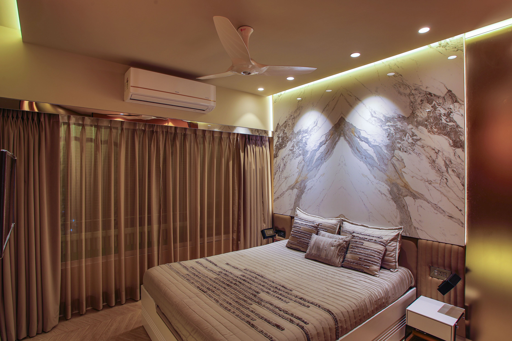

Vous vous entraînez dur, vous mangez proprement... mais vos résultats stagnent ? Et si le maillon manquant n'était ni votre programme ni votre assiette, mais **vos nuits** ? Le sommeil est le plus puissant (et le plus négligé) des outils de performance.
Pourquoi le sommeil décide de vos résultats
- Hormone de croissance : environ 70% est sécrétée pendant le sommeil profond — c'est là que le muscle se répare et se construit.
- Cortisol : le manque de sommeil augmente cette hormone du stress, qui favorise le stockage des graisses et la fonte musculaire.
- Énergie et glycogène : des nuits courtes réduisent les réserves d'énergie pour l'entraînement du lendemain.
- Concentration et blessures : un temps de réaction et une coordination altérés = plus de risques de blessure.

Combien d'heures faut-il vraiment ?
La recommandation générale est de 7 à 9 heures par nuit. Pour un sportif régulier, visez plutôt 8 à 10 heures : plus la charge d'entraînement est élevée, plus le besoin de récupération augmente. Signes que vous manquez de sommeil : réveil difficile, irritabilité, fringales de sucre, performances en baisse.
7 habitudes pour un sommeil réparateur
- Couchez-vous et levez-vous à heures fixes, même le week-end.
- Zéro écran 1 heure avant de dormir (la lumière bleue bloque la mélatonine).
- Chambre fraîche (18–19°C), sombre et calme.
- Pas de caféine après 14h (sa demi-vie dure 6 à 8 heures).
- Dîner léger, au moins 2 à 3 heures avant le coucher.
- Créez un rituel relaxant : lecture, étirements doux, respiration.
- Si l'endormissement reste difficile, un soutien naturel (mélatonine, plantes) peut aider à court terme — voir notre recommandation ci-dessous.
💡 Notre recommandation : YU SLEEP
Pour accompagner ces habitudes, notre équipe a sélectionné YU SLEEP : une formule naturelle en gouttes pour s'endormir plus vite et retrouver un sommeil profond, sans accoutumance. Idéal pour les sportifs et les esprits actifs.
Découvrir YU SLEEP →Conclusion
Le sommeil n'est pas une option : c'est votre troisième pilier, au même titre que l'entraînement et la nutrition. Commencez par fixer une heure de coucher régulière cette semaine — vos muscles (et votre balance) vous remercieront.